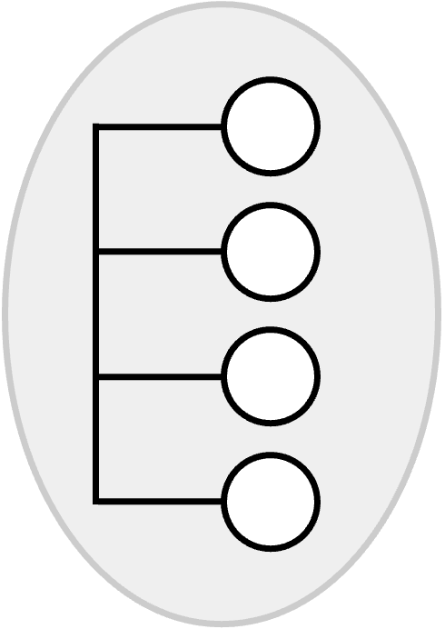
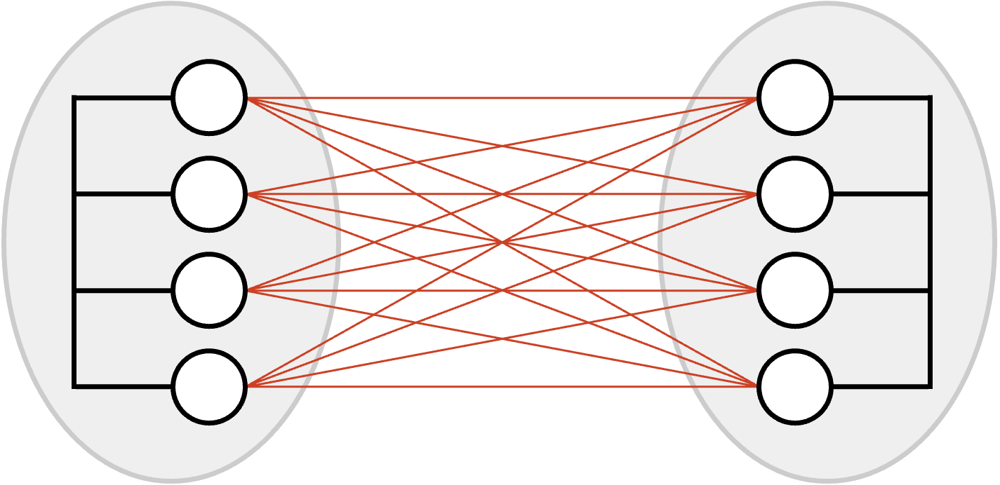
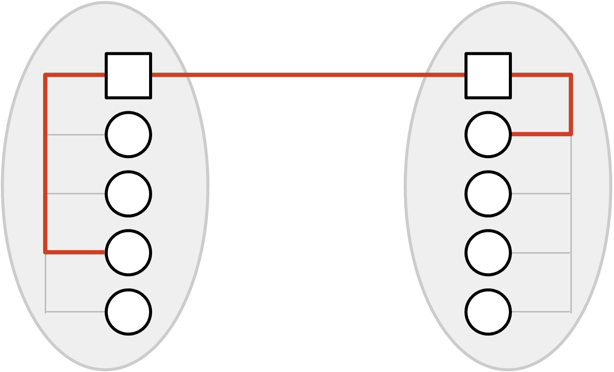
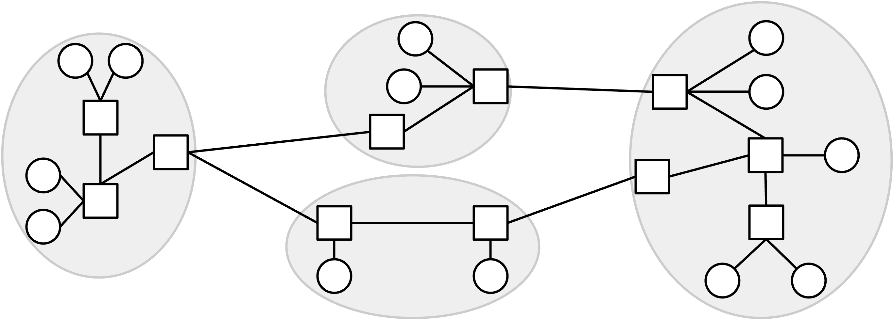
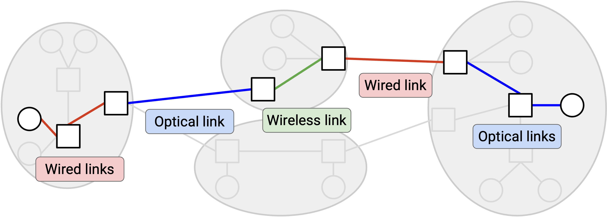
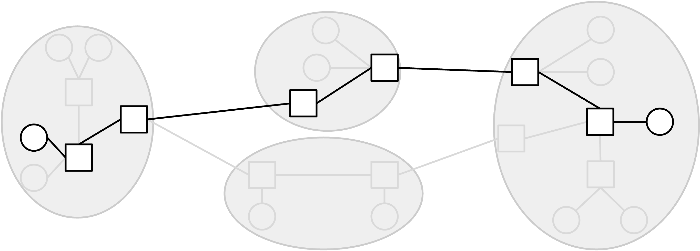
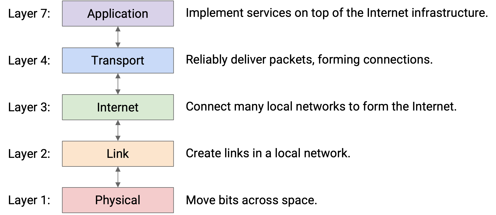

Layers of the Internet
Layer 1: Physical Layer
In this section, we’ll build the Internet from the bottom-up, starting with basic building blocks and combining them to form the Internet infrastructure. We’ll use the postal system as a running analogy, since it shares many design choices with the Internet.
First, we need some way to send a signal across space. In the postal system, this could be a mailman, the Pony Express, a truck, a carrier pigeon, etc.
In the Internet, we’re looking for a way to signal bits (1s and 0s) across space. The technology could be voltages on an electrical wire, wireless radio waves, light pulses along optical fiber cables, among others. There are entire fields of electrical engineering dedicated to sending signals across space, but we won’t go into detail in this class.
Layer 2: Link Layer
In the analogy, now that we have a way to send data across space, we can use that building block to connect up two homes. We could even try to connect up all the homes in the local town.
In the Internet, a link connects two machines. That link could be using any sort of technology (wired, wireless, optical fiber, etc.). If we use links to connect up a bunch of nearby computers (e.g. all the computers in UC Berkeley), we get a local area network (LAN).

At Layer 2, we can also group bits into units of data called packets (sometimes called frames at this layer), and define where a packet starts and ends in the physical signal. We can also handle problems like multiple people simultaneously using the same wire to send data.
Layer 3: Internet Layer
We now have a way to connect everybody in a local area, but what if two people in different areas wanted to communicate? One possible approach is to add a bunch of links between different local networks, but this doesn’t seem very efficient. (What if the two local networks were in different continents?)

Instead, a smarter approach would be to introduce a post office in each network, and just connect the two post offices together. Now, if someone in network A wants to communicate with someone in network B, they can send the mail to the post office in network A. This post office forwards the mail to the post office in network B, which delivers the mail to the destination.

In the Internet, the post office receiving and redirecting mail is called a switch or router.
If we build additional links between switches, we can connect up local networks. With enough links and local networks, we can connect everybody in the world, resulting in the Internet.

One question we’ll need to answer is how to find paths across a network. When a switch receives a packet, how does it know where to forward the packet, so that it gets closer to its final destination? This will be the focus of our routing unit.
We’ll also need to make sure that there’s enough capacity on these links to carry our data. This will be the focus of our congestion control unit.
This picture now shows the infrastructure of the Internet, but in this class, we’ll also study the operators managing the infrastructure. In the analogy, these are the people who build and manage the post office. On the Internet, the operators are Internet service providers like AT&T, Amazon Web Services, or even UC Berkeley, who own and operate Internet structure. In addition to the hardware and software infrastructure, we’ll need to think about these entities as real-life businesses and organizations, and consider their economic and political incentives. For example, if AT&T builds an undersea cable, they might charge a fee for other ISPs to send data through that cable.
Network of Networks
The Internet is often described as a network of networks. There are lots of small local networks, and what happens inside that local network can be managed locally (e.g. by UC Berkeley). Then, all the local networks can connect to each other to form the Internet.
In the network, different links might be using different Layer 2 technology. Some links might use wired Ethernet, and other links might use optical fiber or wireless cellular technology. At Layer 2, we figure out how to send a packet inside a local network, across the link(s) in that network, using the specific technology in that network. Then, at Layer 3, we use the ability to send packets along links as a building block to send packets anywhere in the Internet. As the packet hops across different networks, it may be transmitted across lots of different types of links.

In our analogy, we can see a distinction between homes and post offices. The homes are sending and receiving letters to each other. The post offices aren’t sending or receiving their own mail, but they’re helping to connect up the other homes.
In the Internet, end hosts are machines (e.g. servers, laptops, phones) communicating over the Internet. By contrast, a switch (also called a router) is a machine that isn’t sending or receiving its own data, but exists to help the end hosts communicate with each other. Examples of switches are the router in your home, or larger routers deployed by Internet service providers (e.g. AT&T).
In these notes, we’ll typically draw end hosts as circles, and routers as squares.
Layers of Abstraction
As we’ve built up the Internet, you might have noticed that we’ve been decomposing the problem into smaller tasks and abstractions.
“Modularity based on abstraction is the way things are done.” (Barbara Liskov, Turing lecture). This is how we build and maintain large computer systems. Modularity is especially important for the Internet because the Internet consists of many devices (hosts, routers) and many real-world entities (users, tech companies, ISPs), and having everybody agree on the breakdown of tasks is what enables the Internet to work at scale.
One major advantage of this layered, network-of-network approaches is, each network can make its own decisions about how to move data. For example, as your packet travels across Internet hops, some links might use wireless technology, and other links might use wired technology. The lower-layer protocols can change across different hops, and the Layer 3 protocol still works.
Layering also allows innovation to proceed in parallel. Different communities (e.g. hardware chip designers, software developers) can pursue innovation at different layers.
Layer 3: Best-Effort Service Model
It seems like we’ve built something that can send data anywhere in the world, so why not stop here? There are two issues with Layer 3 that we still need to solve.
The first issue involves the Layer 3 service model. If you use the Layer 3 infrastructure to send messages across the Internet, what service model does the network offer to you as a user? You can think of the service model as a contract between the network and users, describing what the network does and doesn’t support.
Examples of practical service models might include: The network guarantees that data is delivered. Or, the network guarantees that data is delivered within some time limit. Or, the network doesn’t guarantee delivery, but promises to report an error on failure.
The designers of the Internet didn’t support any of those models. Instead, the Internet only supports best effort delivery of data. If you send data over Layer 3, the Internet will try its best to deliver it, but there is no guarantee that the data will be delivered. The Internet also won’t tell you whether or not the delivery succeeded.
Why did the designers choose such a weak service model? One major reason is, it is much easier to build networks that satisfy these weaker demands.
Layer 3: Packets Abstraction
So far, up to Layer 3, we’ve been thinking about sending each message through the Internet independently. More formally, the primary unit of data transfer at Layer 3 is a packet, which is some small chunk of bytes that travel through the Internet, bouncing between routers, as a single unit.
The second issue at Layer 3 is: Packets are limited in size. If the application has some large data to send (e.g. a video), we need to somehow split up that data into packets, and send each packet through the network independently.
With this packet abstraction, we can now look at the life of a packet as it travels across the network. The sender breaks up data into individual packets. The packet travels along a link and arrives at a switch. The switch forwards the packet either to the destination, or to another switch that’s closer to the destination. The packet hops between one or more switches, each one forwarding the packet closer, until it eventually reaches its destination. Note that because of the best-effort model, any of the switches might drop the packet, and there’s no guarantee the packet actually reaches the destination.

Layer 4: Transport
We’ve identified two issues at Layer 3 so far. Large data has to be split into packets, and IP is only best-effort.
To solve both of these problems, we’ll introduce a new layer, the transport layer. This layer uses Layer 3 as a building block, and implements an additional protocol for re-sending lost packets, splitting data into packets, and reordering packets that arrive out-of-order (among other features).
The transport layer protocol allows us to stop thinking in terms of packets, and start thinking in terms of flows, streams of packets that are exchanged between two endpoints.
Layer 7: Application
The application layer being built on top of the Internet is a powerful design choice. If, at lower layers, we built infrastructure for specifically transferring videos between end hosts, then email clients would have to build their own separate infrastructure for transferring emails. The Internet’s design allows it to be a general-purpose communication network for any type of application data.
In this class, we’ll focus more on the infrastructure supporting the application layer (e.g. the mailman, the post offices) and less on the applications themselves (e.g. the contents of the mail). We’ll see some common application protocols near the end of the class, though.
Now that we’ve seen all the layers, notice that each layer relies on services from the layer directly below, and provides services to the layer directly above. For example, someone writing a Layer 7 (application) protocol can assume that they have reliable data delivery from Layer 4. They don’t have to worry about individual packets being lost, since that’s what Layer 4 already dealt with.

Two layers interact directly through the interface between them. There’s no practical way to skip layers and build Layer 7 on top of Layer 3, for example.
Note: You might have noticed we skipped Layers 5 and 6. In the 1970s, when the layers were first standardized, the designers thought that these layers were needed, but they’re obsolete in the modern Internet. If you’re curious, the session layer (5) was supposed to assemble different flows into a session (e.g. loading various images and ads to form a webpage), and the presentation layer (6) was supposed to help the user visualize the data. Today, the functionality of these layers is mostly implemented in Layer 7.